Search Recipes What would you like to cook? Example: Chicken, pork, flour, chocolate, etc. Search Recipe Names Search Ingredients Search Favorites What would you like to cook? Example: Chicken, pork, flour, chocolate, etc. Search Recipe Names Search Ingredients Filter All Recipes Appetizers Breakfast Lunch Dinner Sides Condiments Snacks Show All Recipes Filter Your Favorite Recipes Appetizers Breakfast Lunch Dinner Sides Condiments Snacks Show All Favorites